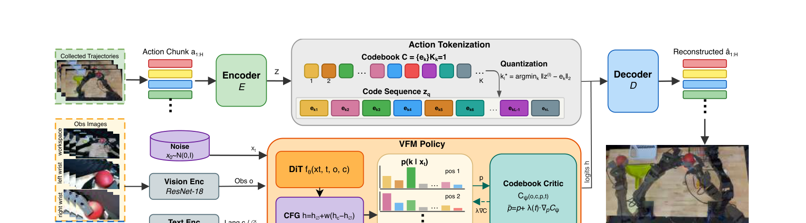
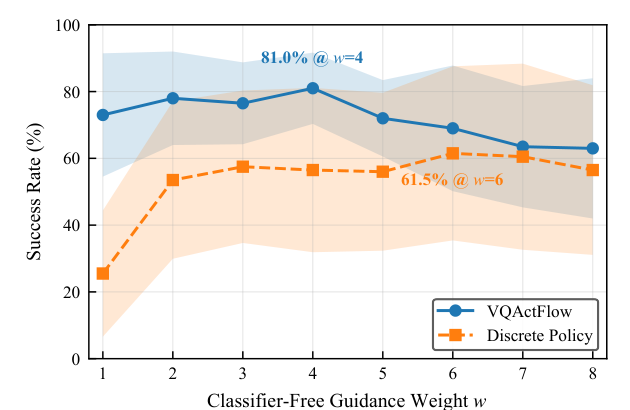
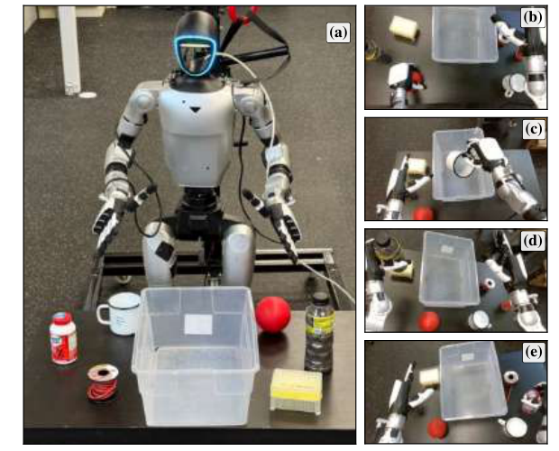
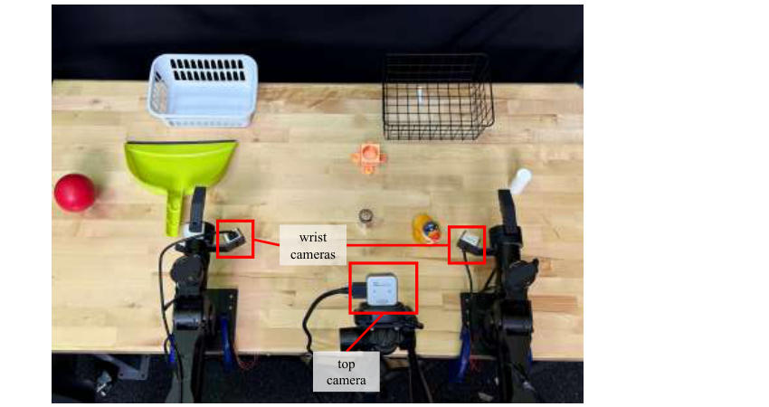

Multi-task manipulation requires picking the right action mode for the task at hand — the wrong pick means the wrong task. VQActFlow tokenizes action chunks into a discrete codebook and generates code sequences with Variational Flow Matching, keeping an explicit, steerable preference over action modes throughout generation. Classifier-free guidance and a learned codebook critic steer that preference at inference time — no retraining needed.
Tokenize, generate, steer

Most flow-matching policies generate in a continuous space with no explicit notion of action mode, so guidance just reshapes one continuous distribution. VQActFlow keeps a discrete, steerable preference over action modes throughout generation, not just at the end of sampling.
-
1
CFG on language conditioning. Extrapolates conditional vs. unconditional logits at every step to sharpen commitment to the instructed task.
-
2
A learned codebook critic. A small contrastively-trained transformer scores feasibility and nudges the distribution toward feasible modes.
Both act on the same categorical preference, so their effects accumulate and combine without retraining.
LIBERO, a G1 humanoid, and an ALOHA-style bimanual platform
VQActFlow outperforms continuous and discrete baselines across all three platforms, under matched encoders, data, and training steps.
CFG on LIBERO-Goal
Guidance through the categorical interface beats guidance through a continuous proxy.

Multi-task scaling on LIBERO-90
CFG and the codebook critic provide complementary, largely non-redundant gains at scale.
| Method | Type | CFG w | Critic λ | Success |
|---|---|---|---|---|
| MT-ACT | Continuous | – | – | 72.4 |
| CFM | Continuous | – | – | 77.2 |
| VQ-BeT | VQ-based | – | – | 24.1 |
| Discrete Policy | VQ-based | 1.0 | – | 49.4 |
| Discrete Policy | VQ-based | 2.0 | – | 60.3 |
| VQActFlow | VQ-based | 1.0 | 0.0 | 72.3 |
| VQActFlow | VQ-based | 1.0 | 1.0 | 74.3 |
| VQActFlow | VQ-based | 2.0 | 0.0 | 77.6 |
| VQActFlow | VQ-based | 2.0 | 1.0 | 80.5 |
| Codebook size | 128 | 256 | 512 | 1024 |
|---|---|---|---|---|
| Success rate | 62.6 | 65.6 | 72.3 | 70.1 |
Success peaks at K=512: smaller codebooks limit vocabulary granularity, larger ones enlarge the per-position classification space and make the categorical prediction harder to learn.
Humanoid whole-body manipulation
A Unitree G1 with two dexterous hands, four shared-workspace pick-and-place tasks differing only in target object and instruction.

| CFG weight | Success | Missed grasp | Wrong task |
|---|---|---|---|
| w=1 | 23.8 | 35.0 | 41.3 |
| w=6 | 57.5 | 40.0 | 2.5 |
CFG's gain comes almost entirely from correcting wrong-task errors (41.3%→2.5%) — it improves task disambiguation, not execution quality.
Bimanual manipulation
Two ALOHA-style arms on four contact-rich tasks, three requiring coordinated bimanual use.

| Method | Battery | Duck | Cylinder | Ball | Avg. |
|---|---|---|---|---|---|
| Discrete Policy, w=1.0 | 35.0 | 70.0 | 15.0 | 75.0 | 48.8 |
| Discrete Policy, w=4.0 | 65.0 | 70.0 | 35.0 | 75.0 | 61.3 |
| VQActFlow, w=1.0, λ=0.0 | 40.0 | 70.0 | 15.0 | 55.0 | 45.0 |
| VQActFlow, w=1.0, λ=1.0 | 50.0 | 75.0 | 50.0 | 65.0 | 60.0 |
| VQActFlow, w=4.0, λ=0.0 | 70.0 | 85.0 | 55.0 | 85.0 | 73.8 |
| VQActFlow, w=4.0, λ=1.0 | 70.0 | 90.0 | 65.0 | 85.0 | 77.5 |
A continuous flow-matching baseline at the same backbone fails all four tasks — severe joint-jerk oscillation, roughly two orders of magnitude worse than VQActFlow.
| Configuration | Unguided | CFG | Critic | CFG + critic |
|---|---|---|---|---|
| Inference time | 155.2 | 288.9 | 216.7 | 350.2 |
350 ms fits well within the 1.28 s per action chunk; asynchronous inference computes the next chunk during execution.
BibTeX
@article{anonymous2026vqactflow,
title={VQActFlow: Vector-Quantized Action Mode Steering for Multi-Task Robot Manipulation},
author={Anonymous Author(s)},
journal={Under review},
year={2026}
}